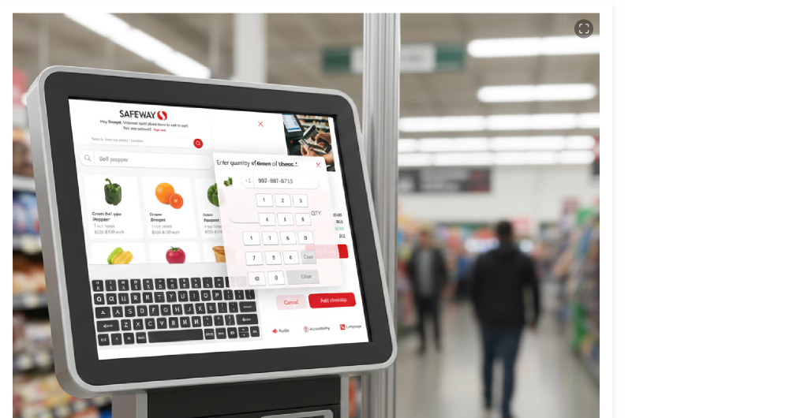
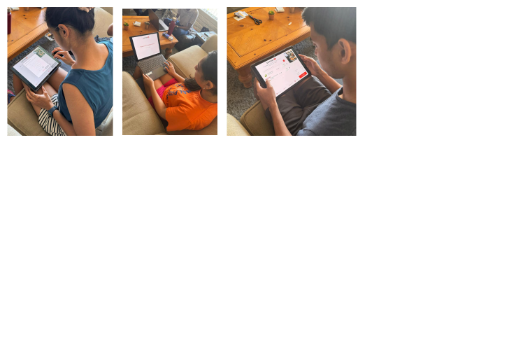

Designing the human interface for an autonomous UAV supply delivery system in disaster zones — where cognitive overload isn't an inconvenience, it's a mission failure.

Outcomes
Crisis-Courier-UAV is an autonomous drone system designed to deliver medical supplies, food, and communications equipment into disaster zones inaccessible to ground vehicles. The human interface — the ground control station used by relief coordinators to manage fleet operations — is where human judgment meets autonomous systems.
This project applied human factors and safety-critical design principles to the ground control interface. The core design challenge: operators are already under extreme cognitive load from the disaster context. The interface cannot add to that load — it must actively reduce it.
Disaster zone operation means the operators using this interface are working under conditions that no normal UX research accounts for: physical exhaustion, emotional stress, sleep deprivation, partial information, and time pressure measured in minutes, not hours.
Standard usability principles — while necessary — aren't sufficient. The design had to draw on aviation human factors, military interface standards (MIL-STD-1472), and emergency dispatch system research to establish the right baseline.
"In a disaster, every decision costs something. The interface can't make me think harder — it has to think with me."
— Emergency logistics coordinator, user research sessionThis project required stepping beyond typical product design research. I applied a human factors framework: cognitive task analysis (CTA) to understand what operators actually need to think about, workload assessment using NASA-TLX, and simulation-based testing with disaster scenario scripts.
The ground control interface is organized around the concept of situational awareness zones: a tactical map at center (geographic reality), fleet status panels at left (UAV states at a glance), and an action queue at right (what decisions need to be made, in priority order). Nothing is hidden behind tabs during active operations.

Simulation testing against a baseline interface showed substantial improvements across all measured dimensions. The 52% reduction in NASA-TLX cognitive load score was the primary target metric. The increase in manageable UAVs per operator — from 2 to 6 — has direct operational impact on how many people can be reached in a disaster scenario.
"For the first time I felt like I was flying with the system, not fighting against it. I could actually see what I needed to see."
— Logistics coordinator, post-simulation debriefConclusion
Crisis-Courier-UAV taught me that design in high-stakes environments is about subtraction, not addition — removing every bit of friction so that human judgment can operate at its best.
A 52% reduction in cognitive load isn't just a metric. In a disaster zone, it means more missions completed, fewer errors, and more lives reached. That's the real measure of this design.
Glad we could cross paths.
Out of anywhere you could be, you're here.